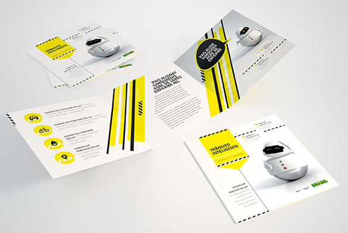

- 
Para o Detran, a Editorar criou um mascote interativo e moderno, utilizando como referência filmes da Disney. O objetivo é passar um ar mais jovem, para que o público-alvo se identifique com o personagem. A proposta é bastante dinâmica, e foi de caso pensado que a Editorar fez o mascote mutável – seu rosto se transforma de acordo com o teor do assunto.
- Tipo: Design
- Cliente: Detran
- Formato: Criação de mascote
- Execução: 15 Dias